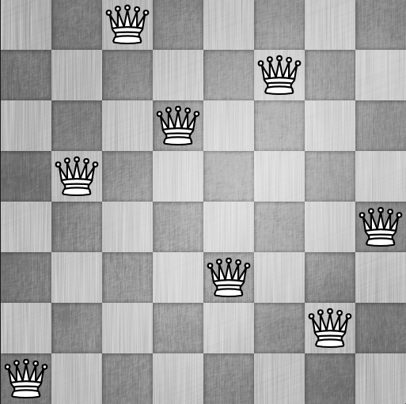
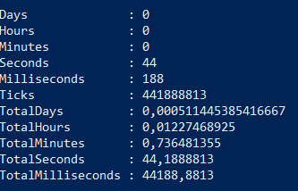
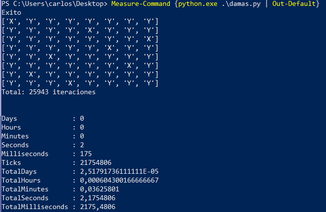

El mundo de la programación está lleno de términos técnicos que parecen supremamente elaborados o más allá del alcance de una persona común, sin embargo gran parte de su “misterio” radica en que a nosotros los hispanohablantes los términos en inglés nos suenan míticos y legendarios, pero realmente son mucho más sencillos de lo que nos imaginamos..
El primer término que vamos a desmitificar es el de backtracking, uno de los pilares de algoritmos de inteligencia artificial. Backtracking, técnica aplicada a los problemas en los que pueden encontrarse soluciones “parciales” que pueden o no conducir a la solución final buscada; y se refiere a la capacidad que tiene un programa de computador de realizar “backtrack” que no es otra cosa que devolverse al sitio donde tomó la última decisión (encontró una solución parcial) y probar una opción diferente a la probada cuando encuentra que esta no conduce a la solución final del problema. Puede visualizarse como una persona recorriendo un laberinto, y dejando una marca del último punto donde tomó una bifurcación con el fin de devolverse a ella y probar un camino diferente hasta encontrar la salida, cosa que por cierto es uno de los algoritmos típicos de backtracking.
Vamos a ilustrarlo con un ejercicio típico de programación que es el problema de las 8 reinas de ajedrez, que consiste en encontrar la forma de colocar 8 damas en un tablero tradicional de ajedrez de 8x8 casillas sin que ninguna de dichas piezas este siendo atacada ni atacando a ninguna otra, por ejemplo:

from copy import deepcopy
def damas(numero, tablero, actual):
x,y = actual
nuevoTablero = deepcopy(tablero)
nuevoTablero[x][y] = "X"
sumIndices = x + y
difIndices = x - y
for i in range (8):
if (nuevoTablero[i][y] == "_"):
nuevoTablero[i][y] = "Y"
if (nuevoTablero[x][i] == "_"):
nuevoTablero[x][i] = "Y"
j = sumIndices - i
if (j >=0 and j <= 7 and nuevoTablero[i][j] == "_"):
nuevoTablero[i][j] = "Y"
j = i - difIndices
if (j >=0 and j <= 7 and nuevoTablero[i][j] == "_"):
nuevoTablero[i][j] = "Y"
for fila in nuevoTablero:
print(fila)
print(actual, numero)
if (numero == 8):
print ("Exito")
return True
else:
for i in range(8):
for j in range(8):
if (nuevoTablero[i][j] == "_"):
if (damas(numero+1, nuevoTablero, (i,j))):
return True
return FalseLas líneas 6-19 se encargan de actualizar el estado del tablero en la variable nuevoTablero, mientras las líneas 20 a 22 imprimen en consola dicho nuevo estado, junto con las coordenadas de la última dama colocada y el número de damas que se han podido colocar.
El if de la línea 23 comprueba si ha podido colocar las 8 damas, en caso afirmativo termina el proceso imprimiendo éxito y retorna true. La rama else correspondiente a ese if da comienzo al backtracking en nuestro algoritmo haciendo uso de una estrategia de "fuerza bruta"; comienza a recorrer todo el arreglo, celda por celda hasta encontrar una casilla en la que no haya ninguna dama ni esté controlada por una, una vez la encuentra se invoca nuevamente a la función damas, incrementando el contador de damas, con el estado actual del tablero y la coordenada (i, j) de la nueva dama a colocar, si dicha invocación logra colocar exitosamente esta nueva dama y las subsiguientes retornará true; en caso contrario (y este es el backtracking) seguirá iterando hasta encontrar una nueva casilla vacía y sin estar atacada por ninguna dama para intentar colocar allí la dama. Si llega al final del arreglo sin haber podido colocar la dama retornará False, como se ve en la línea 32, notificando a la instancia que la haya invocado que le fue imposible colocar la dama en las coordenada recibidas y seguir colocando las damas faltantes hasta completar las 8 pedidas, haciendo de esta forma que la instancia anterior de la función pruebe otra casilla para colocar la dama.
Vamos a correr el algoritmo unas cuantas veces para realizar pruebas, primero debemos inicializar el tablero y dar inicio a la ejecución recursiva, en este caso indicaremos que nuestra casilla inicial será la (0,0).
tablero = [ ["_" for x in range (8)] for y in range(8)]
damas(1, tablero , (0,0))
Measure-Command {python.exe .\damas.py | Out-Default}
Comentemos ahora todas las líneas con comando print, a excepción de aquella que dice "Éxito", y ahí mismo imprimamos una única vez el estado del tablero y volvamos a tomar el tiempo de ejecución de la función.
#for fila in nuevoTablero:
# print(fila)
#print(actual, numero)
if (numero == 8):
print ("Exito")
for fila in nuevoTablero:
print (fila)
return TrueObservamos que el tiempo de ejecución se ha reducido de más de 44 segundos a apenas dos, simplemente evitando que imprimiera en pantalla todos los estados intermedios, esto es algo para tener en cuenta.
Finalmente vamos a crear una variable global (en la realidad nunca deberíamos, es una muy mala práctica de programación) con la única intención de determinar cuantas veces se llamó a la función recursiva damas:

Un total de 25943 iteraciones. En una próxima entrega reemplazaremos nuestra estrategia de fuerza bruta, por una estrategia haciendo uso de una cola prioritaria para determinar cuántas iteraciones menos logramos.